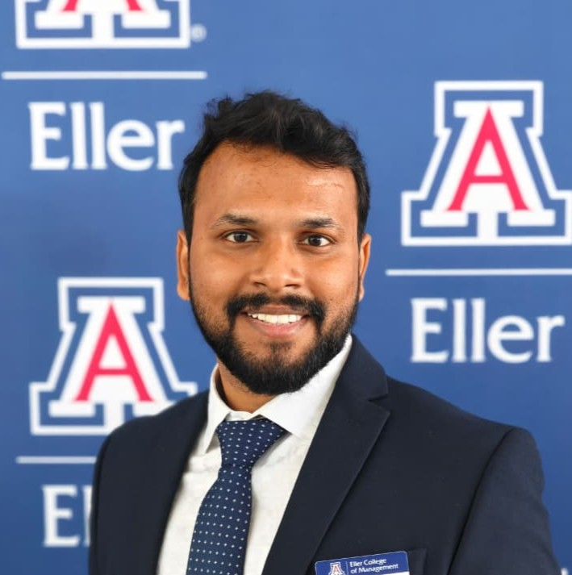

Data & Applied ML Engineer · MS Business Analytics · GPA 4.0
Bridging 9+ years of engineering expertise with modern machine learning — turning complex datasets into decisions that drive real business outcomes.

KKV'"/>About Me
I am completing my MS in Business Analytics at the University of Arizona (GPA 4.0), building on nearly a decade of leading infrastructure projects across India.
My highway design background trained me to think in systems — precise inputs, structured logic, measurable outputs. I now apply that same discipline to predictive modeling, deep learning, and data-driven decision systems.
I thrive at the intersection of technical depth and business impact — translating raw data into decisions that matter, whether uncovering credit risk patterns, optimizing supply chains, or surfacing fairness gaps in healthcare ML models.
Technical Toolkit
A full-stack data science toolkit — from raw data wrangling to production ML model deployment.
Portfolio
Applied ML and analytics projects solving real business problems — from healthcare to infrastructure.
Built an end-to-end ML pipeline on 95K+ real-world opioid treatment records. Trained and tuned four models — Logistic Regression, Decision Tree, XGBoost, and Neural Network — with GridSearchCV hyperparameter optimization. Includes full preprocessing with SMOTE class balancing and demographic fairness analysis across race, gender, age, and state subgroups.
Built an automated classification system covering 60+ coin types using CNN and transfer learning (MobileNetV2). Applied data augmentation to train robust models with only 10–15 images per class. Reduced coin verification time from 10 minutes to 20 seconds.
Built a classification pipeline on 26K survey records to predict vaccination uptake using behavioral, demographic, and attitudinal features. Applied SMOTE for class imbalance and ran fairness analysis across demographic subgroups — with findings directly applicable to targeted public health outreach.
Won 1st place at the American Express Business Analytics Competition. Analyzed credit risk and customer segmentation across 36K+ client applications using Tableau. Found that property ownership and spending behavior are stronger repayment predictors than income or employment status.
Built a regression model using data from 125 countries to identify economic and governance drivers of passport pricing. Applied BIC and Best Subset model selection with multicollinearity diagnostics. GDP per capita and political stability emerged as the primary determinants — with clear implications for pricing fairness and policy design.
Built an ML model in R to predict the optimal distribution channel for Pepsi across Andhra Pradesh districts. Compared Logistic Regression, Decision Tree, Naive Bayes, and KNN. Identified market type, revenue potential, and vehicle availability as the key business drivers.
Designed a relational database with 6 normalized tables to manage books, members, employees, and transactions. Built advanced SQL queries using JOINs, CTAS, and Window Functions to generate branch-level revenue reports and identify top-performing staff.
A rule-based compliance engine covering 432+ parameters across three IRC highway design standards. Accepts design inputs, flags HARD FAILs and ADVISORYs instantly, and generates downloadable HTML and Excel audit reports. Directly usable by highway engineers on real 4-lane highway projects.
Work History
9+ years leading large-scale engineering projects with a strong track record of data-driven decision making and team delivery.
Academic Background
Recognition
Recognized for analytical excellence and strategic problem-solving across academic and professional settings.
Let's Connect
Currently seeking full-time roles in Data Analytics, Applied ML, or Business Intelligence. Based in Chandler, AZ — available May 2026.
✉ Send Me an Email